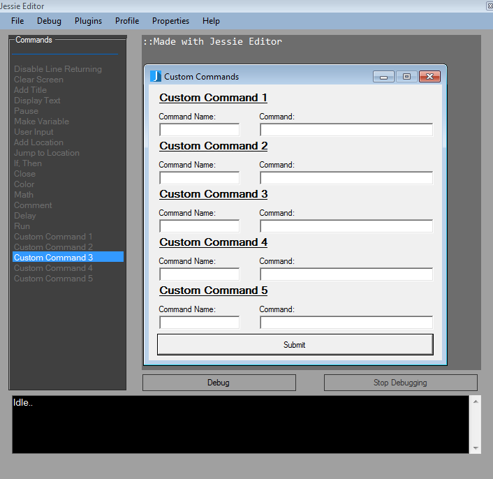

Custom Commands
Since Jessie Editor vanilla commands are for creating batch files, Jessie Editor also comes with five custom commands.
These custom commands allow users to input any command they want to make Jessie Editor friendly with any language.
To add a custom command you can either click on one of the custom commands in the commands bar or goto the properties
menu and select custom commands. Once you get there the custom commands form will appear.

To add a custom command, click in one of the command name textboxes and give your command a name. For this demo,
we will name it tutorial. Then give your command the actual code. In the command textbox add the code you want to be
added whenever your command is clicked. We will use "echo You did it!". To add your command, click the submit button
and it will be added to the sidebar. To run your command, click it in the sidebar again and the command will be added to
the main editor's code.
back